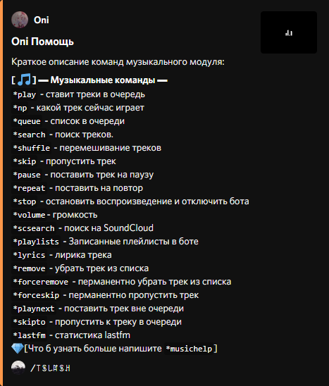
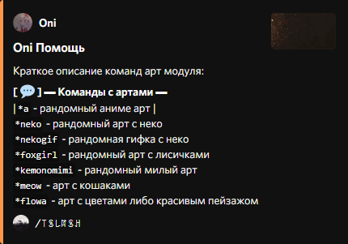
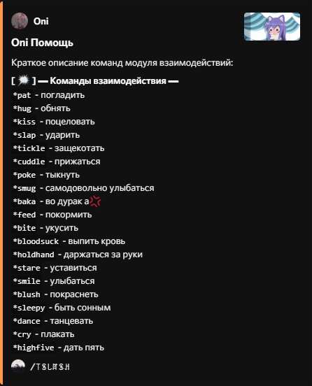
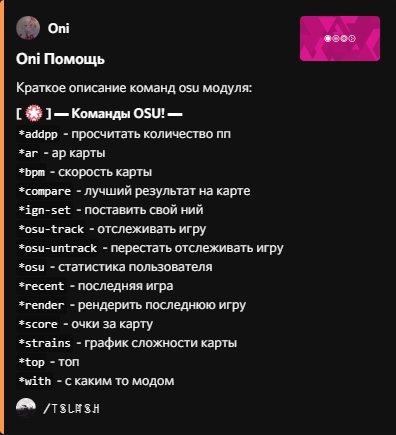
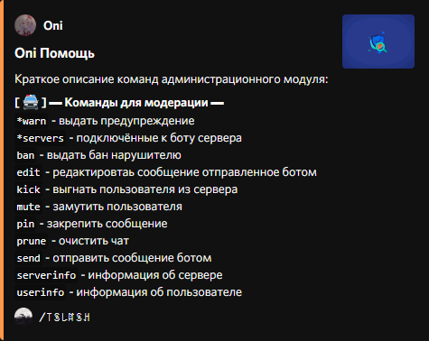

Oni
Дискорд бот для
музыки, развлечений, артов, пикч, модерации, бугуртов, Вас
cloudДобавить на сервер
get_appСкачать исходник
Выберите какого бота Вы хотите добавить
-
 Oni💎
Oni💎
Стабильная версия бота
addДОБАВИТЬ
Не имеет некоторых функций -
Oni💎[ʙᴇᴛᴀ]
Не стабильная версия бота
addДОБАВИТЬ
Имеет бета функции которых нету в стабильной версии бота

Музыка и мультимедиа
-
assistantВысокое качествоВоспроизвидение музыки в высоком качестве без пролагиваний и лишних потраченых денег на воздух.
-
app_settings_altФункциональность- Возможность добавлять треки в списки ожиданий
- создание сообственных плейлистов
- отслеживание проигрывания трека в реальном времени
- возможность слушать музыку из youtube и soundcloud. -
cloud_doneБесперебойностьНикаких внезапных вылетов!
Бот работает до тех пор пока Вы его используете и покинет голосовой канал только в том случае если все выйдут и перестанут его использовать
(p.s: Это сделано для экономии трафика)

Арты и пикчи
-
api РазнообразностьАрты и пикчи никогда не повторяют друг друга, всегда со вкусом и приятной атмосферой
-
list_all Разновидность типовВы всегда можете выбрать что именно хотите увидеть, будь то пикча из сакурой или что-то другое

Команды содействия
-
info Об командахКоманды сделаны для взаимодействия, с человеком на расстоянии
-
stars ОсобенностиКоманды имеют довольно приятное оформление с пикчами и прикольными надписями которые могут поднять настроение с:

Развлечения
-
info Об командахЭти команды сделаны на крайний случай, когда Вам станет скучно, даа.. их можно назвать безделушками, но они спасают от скуки :D
-
sentiment_satisfied_alt ПрэколюхиДовольно интересные команды о которых можно много рассказать, но лучше Вам самим попробовать
Статистика osu!
-
stars Об особенностях- Довольно отзывчивая статистика, что б получить результат долго ждать не приходится
- команды приятно оформлены
- есть возможность рендера карт прямо в чат
- просмотр статистики и сложности карт(включая всех их особенностей) -
save_alt Сохранение профиляБот привяжет Ваш профиль к командам и на следующий раз не попросит вводить Ваш ник. Так же он будет выводить последние результаты прямо в чат

Модерация
-
construction Лёгкая модерацияНаписание команд производится легко и быстро

NSFW
-
warning Ну как бы...Здесь не будет описания для такого, потому что нельзя ( ͡° ͜ʖ ͡°)
Дополнительные команды
-
help_outline ОписаниеПо большей части это "команды инструменты" которые не нашли себе места ни в одном модуле. Бывают полезными в некоторых случаях.